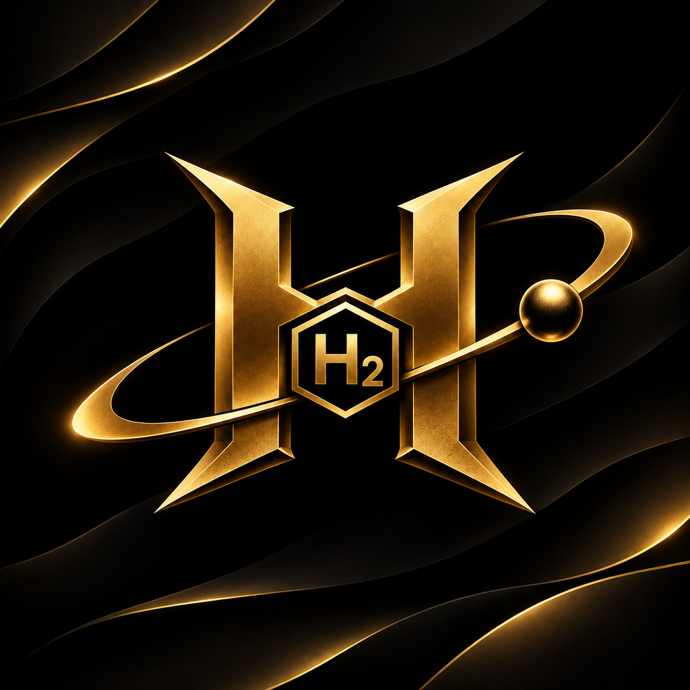

01 / MUSIC IN DEVELOPMENT
WAVIEO
A music experience, tuned for communities.
A Discord music bot powered by Lavalink, with playback controls, queue tools, filters, playlists, synced lyrics, and server-level customization.
INVITE BOT ↗Four different personalities. One shared mission: make Discord communities more capable, more fun, and easier to manage.
A music experience, tuned for communities.
A Discord music bot powered by Lavalink, with playback controls, queue tools, filters, playlists, synced lyrics, and server-level customization.
INVITE BOT ↗One bot. A whole toolkit.
An all-in-one Discord bot focused on server protection and automation, including antinuke, automod, antibot, whitelist controls, and community utilities.
INVITE BOT ↗
Versatility, packed into one bot.
An all-in-one community bot from the Oxalic Lab lineup, designed to bring useful server tools and everyday features into one place.
INVITE BOT ↗Music that keeps the server moving.
The first music bot in the lineup. Built around the Wavieo music experience, with its own identity and a growing community.
INVITE BOT ↗Feature summaries are based on the available project information; some capabilities are still evolving.